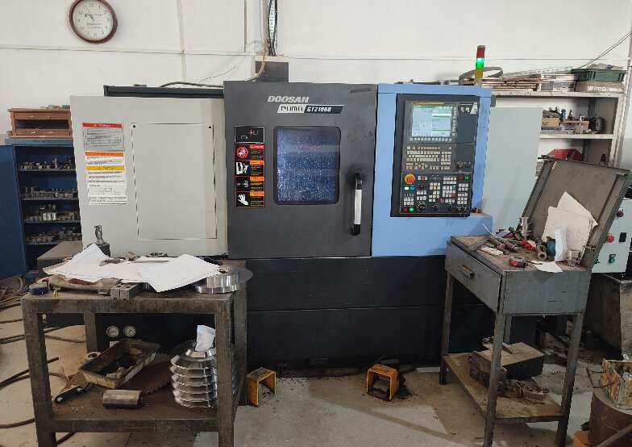

Industrial Engineering Internship
IMF Makina | Izmir, Turkey | Oct 2026 – Mar 2027

Completed a comprehensive industrial placement focusing on high-precision CNC manufacturing and reliability engineering.
Core Responsibilities
- Participated in manufacturing processes, including CNC machining operations, programming, setup, and quality control of precision mechanical parts.
- Supported the preventive and corrective maintenance of production machinery, troubleshooting technical faults, and servicing industrial equipment.
- Transferred CAD/CAM data to CNC controllers via Direct Numerical Control (DNC) interfaces and executed zero-point settings and tool offset calibrations.
Process Optimization Projects
- CNC Cycle Optimization: Optimized cutting speeds and feed rates for 42CrMo4 alloy steel, reducing total cycle time per part by 14.5% and extending tool lifespan by 20%.
- Preventive Maintenance Strategy: Analyzed historical repair logs and CNC error codes using Pareto techniques to implement a standardized daily inspection protocol, reducing unplanned machine stoppages by 25%.
- Data Bottleneck Analysis: Evaluated shop-floor communication gaps and proposed the integration of automated Manufacturing Execution Systems (MES) to minimize manual data-entry errors and administrative friction.